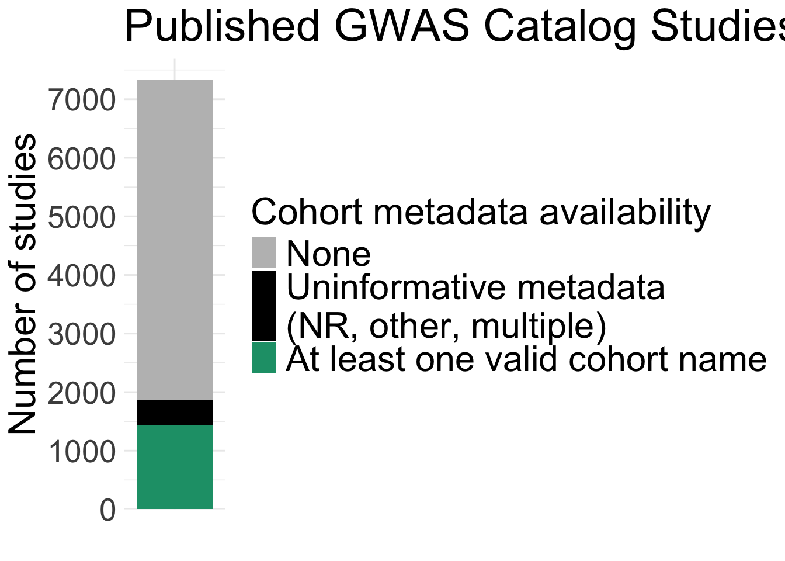
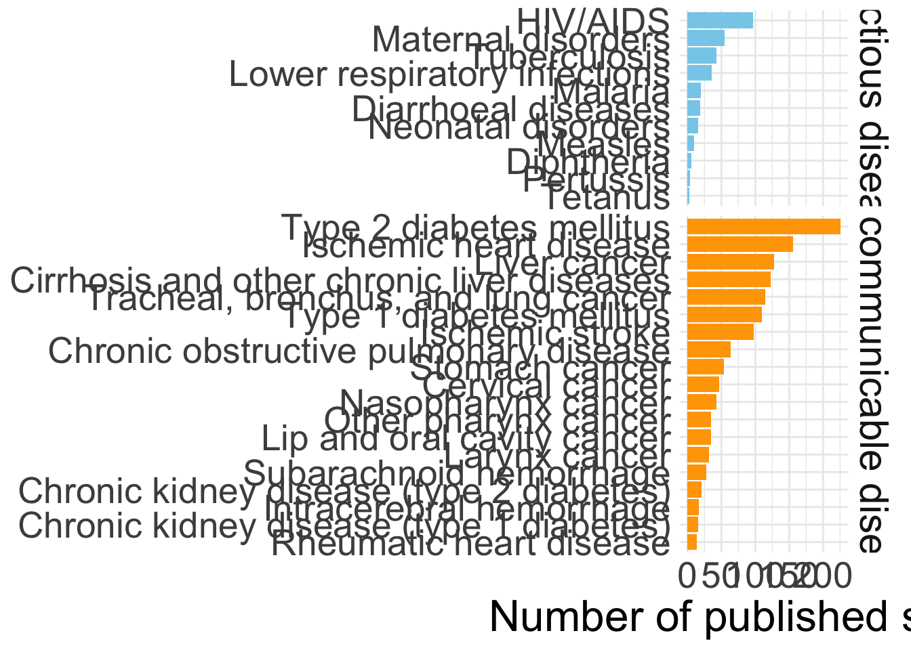
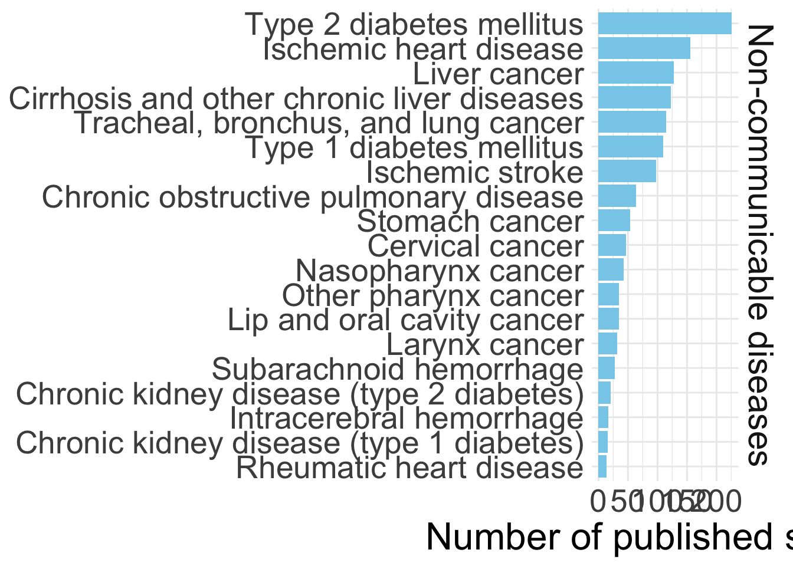
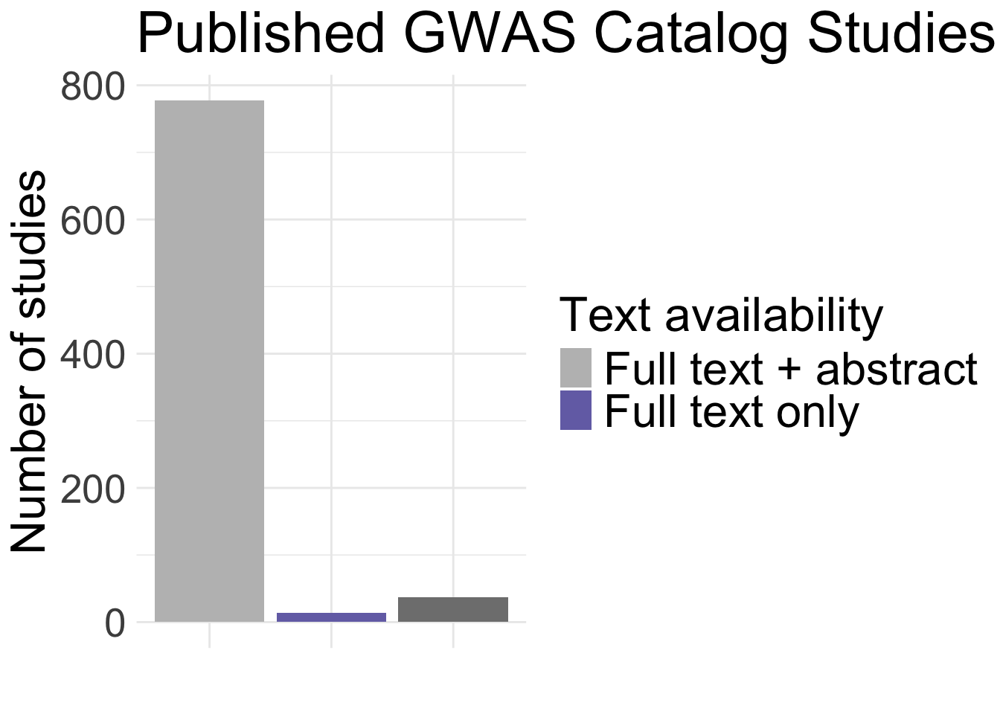
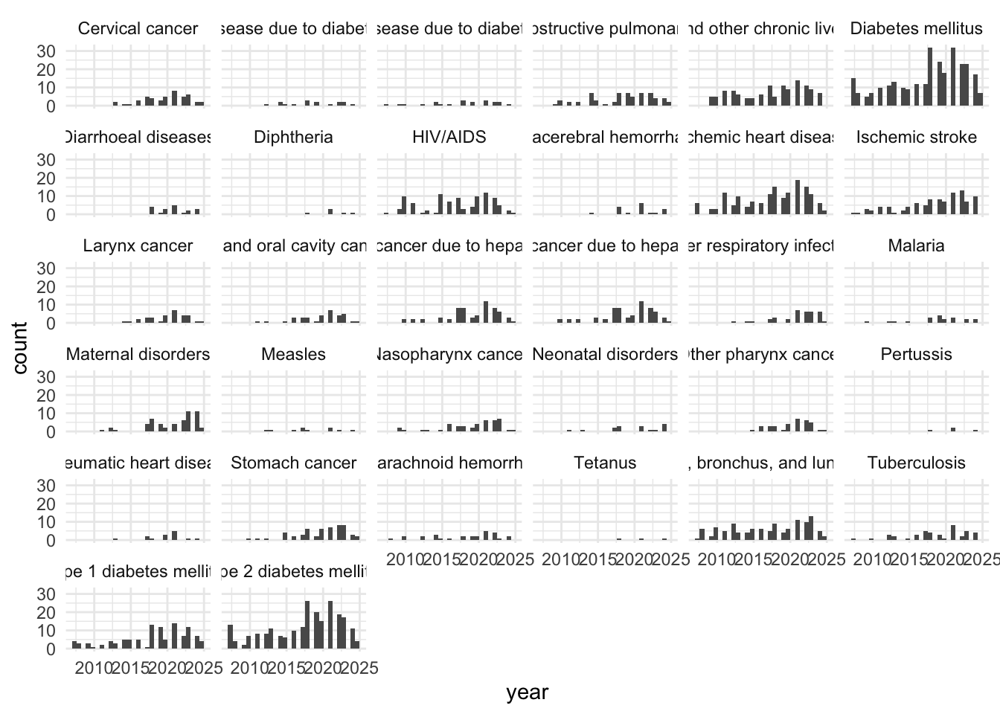
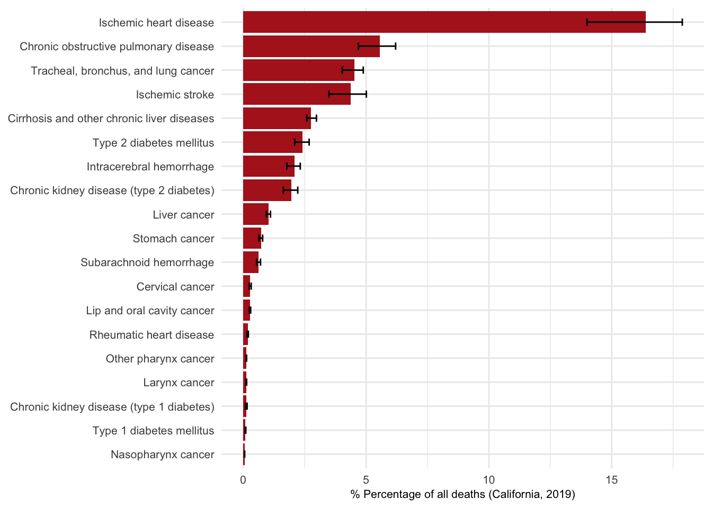
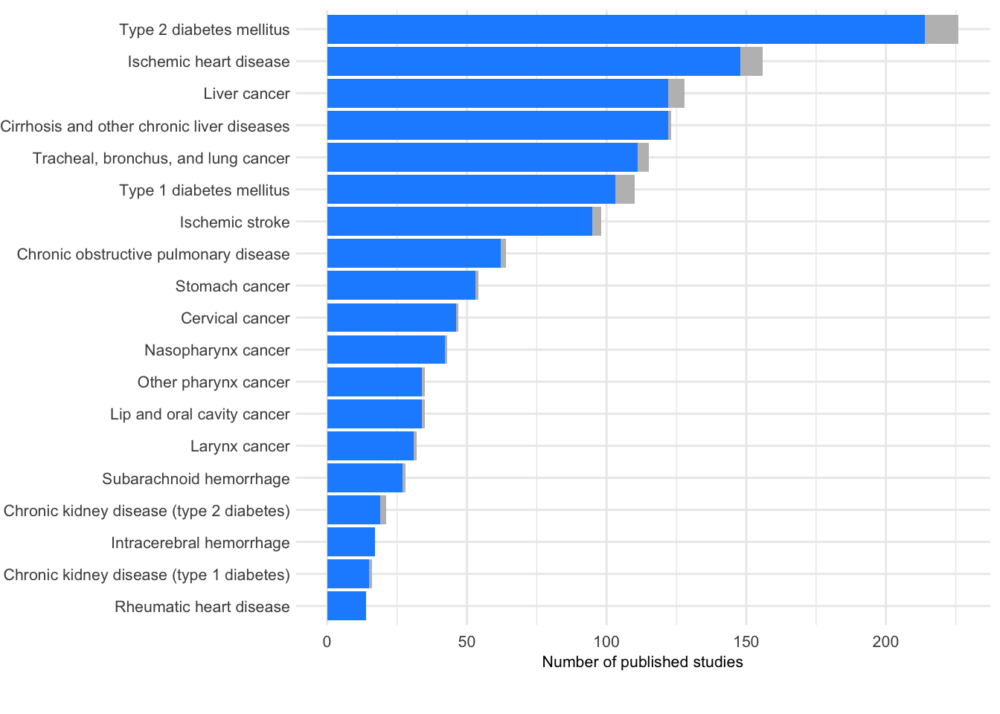

Last updated: 2026-03-31
Checks: 7 0
Knit directory:
genomics_ancest_disease_dispar/
This reproducible R Markdown analysis was created with workflowr (version 1.7.2). The Checks tab describes the reproducibility checks that were applied when the results were created. The Past versions tab lists the development history.
Great! Since the R Markdown file has been committed to the Git repository, you know the exact version of the code that produced these results.
Great job! The global environment was empty. Objects defined in the global environment can affect the analysis in your R Markdown file in unknown ways. For reproduciblity it’s best to always run the code in an empty environment.
The command set.seed(20220216) was run prior to running
the code in the R Markdown file. Setting a seed ensures that any results
that rely on randomness, e.g. subsampling or permutations, are
reproducible.
Great job! Recording the operating system, R version, and package versions is critical for reproducibility.
Nice! There were no cached chunks for this analysis, so you can be confident that you successfully produced the results during this run.
Great job! Using relative paths to the files within your workflowr project makes it easier to run your code on other machines.
Great! You are using Git for version control. Tracking code development and connecting the code version to the results is critical for reproducibility.
The results in this page were generated with repository version 55f58c1. See the Past versions tab to see a history of the changes made to the R Markdown and HTML files.
Note that you need to be careful to ensure that all relevant files for
the analysis have been committed to Git prior to generating the results
(you can use wflow_publish or
wflow_git_commit). workflowr only checks the R Markdown
file, but you know if there are other scripts or data files that it
depends on. Below is the status of the Git repository when the results
were generated:
Ignored files:
Ignored: .DS_Store
Ignored: .Rproj.user/
Ignored: .venv/
Ignored: BC2GM/
Ignored: BioC.dtd
Ignored: FormatConverter.jar
Ignored: FormatConverter.zip
Ignored: analysis/.DS_Store
Ignored: ancestry_dispar_env/
Ignored: code/.DS_Store
Ignored: code/full_text_conversion/.DS_Store
Ignored: data/.DS_Store
Ignored: data/RCDCFundingSummary_01042026.xlsx
Ignored: data/cdc/
Ignored: data/cohort/
Ignored: data/epmc/
Ignored: data/europe_pmc/
Ignored: data/gbd/.DS_Store
Ignored: data/gbd/IHME-GBD_2021_DATA-d8cf695e-1.csv
Ignored: data/gbd/IHME-GBD_2023_DATA-73cc01fd-1.csv
Ignored: data/gbd/gbd_2019_california_percent_deaths.csv
Ignored: data/gbd/ihme_gbd_2019_global_disease_burden_rate_all_ages.csv
Ignored: data/gbd/ihme_gbd_2019_global_paf_rate_percent_all_ages.csv
Ignored: data/gbd/ihme_gbd_2021_global_disease_burden_rate_all_ages.csv
Ignored: data/gbd/ihme_gbd_2021_global_paf_rate_percent_all_ages.csv
Ignored: data/gwas_catalog/
Ignored: data/icd/.DS_Store
Ignored: data/icd/2025AA/
Ignored: data/icd/IHME_GBD_2019_COD_CAUSE_ICD_CODE_MAP_Y2020M10D15.XLSX
Ignored: data/icd/IHME_GBD_2019_NONFATAL_CAUSE_ICD_CODE_MAP_Y2020M10D15.XLSX
Ignored: data/icd/IHME_GBD_2021_COD_CAUSE_ICD_CODE_MAP_Y2024M05D16.XLSX
Ignored: data/icd/IHME_GBD_2021_NONFATAL_CAUSE_ICD_CODE_MAP_Y2024M05D16.XLSX
Ignored: data/icd/UK_Biobank_master_file.tsv
Ignored: data/icd/cdc_valid_icd10_Sep_23_2025.xlsx
Ignored: data/icd/cdc_valid_icd9_Sep_23_2025.xlsx
Ignored: data/icd/hp_umls_mapping.csv
Ignored: data/icd/lancet_conditions_icd10.xlsx
Ignored: data/icd/manual_disease_icd10_mappings.xlsx
Ignored: data/icd/mondo_umls_mapping.csv
Ignored: data/icd/phecode_international_version_unrolled.csv
Ignored: data/icd/phecode_to_icd10_manual_mapping.xlsx
Ignored: data/icd/semiautomatic_ICD-pheno.txt
Ignored: data/icd/semiautomatic_ICD-pheno_UKB_subset.txt
Ignored: data/icd/umls-2025AA-mrconso.zip
Ignored: data/icd/~$lancet_conditions_icd10.xlsx
Ignored: doccano_venv/
Ignored: figures/
Ignored: output/.DS_Store
Ignored: output/abstracts/
Ignored: output/doccano/
Ignored: output/fulltexts/
Ignored: output/gwas_cat/
Ignored: output/gwas_cohorts/
Ignored: output/icd_map/
Ignored: output/pubmedbert_entity_predictions.csv
Ignored: output/pubmedbert_entity_predictions.jsonl
Ignored: output/pubmedbert_predictions.csv
Ignored: output/pubmedbert_predictions.jsonl
Ignored: output/supplement/
Ignored: output/text_mining_predictions/
Ignored: output/trait_ontology/
Ignored: population_description_terms.txt
Ignored: pubmedbert-cohort-ner-model/
Ignored: pubmedbert-cohort-ner/
Ignored: renv/
Ignored: spacy_venv_requirements.txt
Ignored: spacyr_venv/
Untracked files:
Untracked: code/full_text_conversion/html_to_xml.R
Untracked: code/text_mining_models/tokenise_data.py
Unstaged changes:
Modified: analysis/disease_inves_by_ancest.Rmd
Modified: analysis/replication_ancestry_bias.Rmd
Modified: analysis/text_for_cohort_labels.Rmd
Note that any generated files, e.g. HTML, png, CSS, etc., are not included in this status report because it is ok for generated content to have uncommitted changes.
These are the previous versions of the repository in which changes were
made to the R Markdown (analysis/specific_aims_stats.Rmd)
and HTML (docs/specific_aims_stats.html) files. If you’ve
configured a remote Git repository (see ?wflow_git_remote),
click on the hyperlinks in the table below to view the files as they
were in that past version.
| File | Version | Author | Date | Message |
|---|---|---|---|---|
| Rmd | 55f58c1 | IJbeasley | 2026-03-31 | Update / clean up specific aims stats |
| html | 813cc4d | IJbeasley | 2026-03-24 | Build site. |
| Rmd | 4a7ba3f | IJbeasley | 2026-03-24 | Update / get statistics for specific aims + research proposal |
| Rmd | 104ee27 | IJbeasley | 2026-01-12 | Update basic stats for specific aims + research proposal |
| html | 1b09795 | IJbeasley | 2025-10-27 | Build site. |
| Rmd | 05e68a6 | IJbeasley | 2025-10-27 | Update index page |
library(data.table)
library(dplyr)
library(ggplot2)orig_gwas_study_info <- data.table::fread(here::here("data/gwas_catalog/gwas-catalog-v1.0.3.1-studies-r2025-07-21.tsv"))Warning in
data.table::fread(here::here("data/gwas_catalog/gwas-catalog-v1.0.3.1-studies-r2025-07-21.tsv")):
Found and resolved improper quoting out-of-sample. First healed line 123785:
<<2021-03-01 33590662 Heilbronner U 2021-02-15 Am J Med Genet B Neuropsychiatr
Genet www.ncbi.nlm.nih.gov/pubmed/33590662 "The Heidelberg Five" personality
dimensions: Genome-wide associations, polygenic risk for neuroticism, and
psychopathology 20 years after assessment. Emotional lability 3,268 European
ancestry individuals NA Illumina [8348463] (imputed) 4 mood instability
measurement http://www.ebi.ac.uk/efo/EFO_0008475 GCST90013452 Genome-wide
genotyping array HeiDE yes http://ftp.ebi.>>. If the fields are not quoted
(e.g. field separator does not appear within any field), try quote="" to avoid
this warning.orig_gwas_study_info = orig_gwas_study_info |>
dplyr::rename_with(~ tolower(gsub(" ", "_", .x)))
# how many published studies (i.e. number of unique pubmed ids)
n_published_studies_orig <- orig_gwas_study_info |>
dplyr::filter(!is.na(pubmed_id)) |>
dplyr::pull(pubmed_id) |>
unique() |>
length()
print("Number of published studies in original GWAS Catalog:")[1] "Number of published studies in original GWAS Catalog:"print(n_published_studies_orig)[1] 7326# how many published studies include any cohort information?
n_studies_with_cohort_info_orig <- orig_gwas_study_info |>
dplyr::filter(!is.na(cohort) & cohort != "") |>
dplyr::pull(pubmed_id) |>
unique() |>
length()
print("Number of published studies with cohort information in original GWAS Catalog:")[1] "Number of published studies with cohort information in original GWAS Catalog:"print(n_studies_with_cohort_info_orig)[1] 1868print("Proportion of published studies with cohort information in original GWAS Catalog:")[1] "Proportion of published studies with cohort information in original GWAS Catalog:"100 * n_studies_with_cohort_info_orig / n_published_studies_orig[1] 25.49823studies_with_true_cohort_info_orig <- orig_gwas_study_info |>
dplyr::mutate(cohort = stringr::str_remove_all(pattern = "(^NR$)|(^NR\\|)|(\\|NR$)|(\\|NR\\|)|(not reported)",
cohort)) |>
dplyr::mutate(cohort = stringr::str_remove_all(pattern = "other|multiple|Other|Multiple|Others|\\(Multiple cohorts\\)|OTHER",
cohort)) |>
dplyr::filter(!is.na(cohort) &
cohort != "") |>
dplyr::pull(pubmed_id) |>
unique()
# how many published studies include any true cohort information
# (i.e. not 'NR', or 'not reported', 'other', 'multiple')
n_studies_with_true_cohort_info_orig <- studies_with_true_cohort_info_orig |>
unique() |>
length()
print("Number of published studies with true cohort information in original GWAS Catalog:")[1] "Number of published studies with true cohort information in original GWAS Catalog:"print(n_studies_with_true_cohort_info_orig)[1] 1435print("Proportion of published studies with true cohort information in original GWAS Catalog:")[1] "Proportion of published studies with true cohort information in original GWAS Catalog:"100 * n_studies_with_true_cohort_info_orig / n_published_studies_orig[1] 19.58777data.frame(n_studies = c(n_published_studies_orig - n_studies_with_cohort_info_orig,
n_studies_with_cohort_info_orig - n_studies_with_true_cohort_info_orig,
n_studies_with_true_cohort_info_orig),
type = c("all",
"studies_with_cohort_info",
"studies_with_true_cohort_info"),
group = c("GWAS Catalog Published Studies")) |>
ggplot(aes(x = group, y = n_studies, fill = type)) +
geom_col(position = "stack") +
labs(x = "",
y = "Number of studies",
title = "Published GWAS Catalog Studies") +
scale_y_continuous(
breaks = seq(0, max(n_published_studies_orig), by = 1000),
expand = expansion(mult = c(0, 0.05))
) +
scale_fill_manual(
name = "Cohort metadata availability",
values = c(
all = "grey",
studies_with_cohort_info = "black",
studies_with_true_cohort_info = "#1b9e77"
),
labels = c(
all = "None",
studies_with_cohort_info = "Uninformative metadata\n(NR, other, multiple)",
studies_with_true_cohort_info = "At least one valid cohort name"
)
) +
theme_minimal() +
theme(
axis.text.x = element_blank(),
axis.ticks.x = element_blank(),
axis.text.y = element_text(size = 20),
axis.title.y = element_text(size = 24),
legend.title = element_text(size = 24),
legend.text = element_text(size = 23),
title = element_text(size = 24)
)
| Version | Author | Date |
|---|---|---|
| 813cc4d | IJbeasley | 2026-03-24 |
Non-communicable and communicable
gwas_study_info <- data.table::fread(here::here("output/icd_map/gwas_study_gbd_causes.csv"))
gwas_study_info = gwas_study_info |>
dplyr::rename_with(~ tolower(gsub(" ", "_", .x))) |>
dplyr::filter(cause != "")
# how many published studies (i.e. number of unique pubmed ids)
n_published_studies <- gwas_study_info |>
dplyr::filter(!is.na(pubmed_id)) |>
dplyr::pull(pubmed_id) |>
unique() |>
length()
print("Number of published studies in GWAS Catalog:")[1] "Number of published studies in GWAS Catalog:"print(n_published_studies)[1] 1001gwas_non_comm_study_info = gwas_study_info |>
dplyr::filter(!cause %in% c("HIV/AIDS",
"Tuberculosis",
"Malaria",
"Lower respiratory infections",
"Diarrhoeal diseases",
"Neonatal disorders",
"Tetanus",
"Diphtheria",
"Pertussis" ,
"Measles",
"Maternal disorders"))
print("Non-communicable disease causes in the dataset:")[1] "Non-communicable disease causes in the dataset:"gwas_non_comm_study_info$cause |> unique() |> sort() [1] "Cervical cancer"
[2] "Chronic kidney disease due to diabetes mellitus type 1"
[3] "Chronic kidney disease due to diabetes mellitus type 2"
[4] "Chronic obstructive pulmonary disease"
[5] "Cirrhosis and other chronic liver diseases"
[6] "Diabetes mellitus"
[7] "Intracerebral hemorrhage"
[8] "Ischemic heart disease"
[9] "Ischemic stroke"
[10] "Larynx cancer"
[11] "Lip and oral cavity cancer"
[12] "Liver cancer due to hepatitis B"
[13] "Liver cancer due to hepatitis C"
[14] "Nasopharynx cancer"
[15] "Other pharynx cancer"
[16] "Rheumatic heart disease"
[17] "Stomach cancer"
[18] "Subarachnoid hemorrhage"
[19] "Tracheal, bronchus, and lung cancer"
[20] "Type 1 diabetes mellitus"
[21] "Type 2 diabetes mellitus" # how many published studies (i.e. number of unique pubmed ids)
n_published_non_comm_studies <- gwas_non_comm_study_info |>
dplyr::filter(!is.na(pubmed_id)) |>
dplyr::pull(pubmed_id) |>
unique() |>
length()
print("Number of published non-communicable disease studies in GWAS Catalog:")[1] "Number of published non-communicable disease studies in GWAS Catalog:"n_published_non_comm_studies[1] 828condition_counts <-
gwas_study_info |>
dplyr::select(pubmed_id, cause) |>
dplyr::distinct() |>
dplyr::group_by(cause) |>
dplyr::summarise(n_studies = length(unique(pubmed_id))) |>
dplyr::arrange(desc(n_studies))
lancet_grouping <- readxl::read_xlsx(here::here("data/icd/lancet_conditions_icd10.xlsx"))
lancet_grouping = lancet_grouping |>
dplyr::select(cause = mapped_gbd_term, lancet_group) |>
distinct()
condition_counts = condition_counts |>
dplyr::left_join(lancet_grouping, by = "cause") |>
dplyr::arrange(desc(n_studies))
# combine Liver cancer due to hepatitis B and Liver cancer due to hepatitis C
condition_counts = condition_counts |>
dplyr::mutate(cause = ifelse(cause %in% c("Liver cancer due to hepatitis B",
"Liver cancer due to hepatitis C"),
"Liver cancer",
cause)) |>
dplyr::group_by(cause, lancet_group) |>
dplyr::summarise(n_studies = sum(n_studies)) |>
dplyr::arrange(desc(n_studies))`summarise()` has grouped output by 'cause'. You can override using the
`.groups` argument.# exclude "Diabetes mellitus"
condition_counts = condition_counts |>
dplyr::filter(cause != "Diabetes mellitus")
# rename Chronic kidney disease due to diabetes mellitus type 2
# Chronic kidney disease (type 2 diabetes)
condition_counts = condition_counts |>
dplyr::mutate(cause = ifelse(cause == "Chronic kidney disease due to diabetes mellitus type 2",
"Chronic kidney disease (type 2 diabetes)",
cause))
# repeat for Chronic kidney disease due to diabetes mellitus type 1
condition_counts = condition_counts |>
dplyr::mutate(cause = ifelse(cause == "Chronic kidney disease due to diabetes mellitus type 1",
"Chronic kidney disease (type 1 diabetes)",
cause))
# change lancent group names, for better display
# I-8 = Infectious diseases
# NCD-7 = Non-communicable diseases
condition_counts = condition_counts |>
dplyr::mutate(lancet_group = ifelse(lancet_group == "I-8",
"Infectious diseases",
lancet_group)) |>
dplyr::mutate(lancet_group = ifelse(lancet_group == "NCD-7",
"Non-communicable diseases",
lancet_group))
ggplot(aes(x = reorder(cause, n_studies),
fill = lancet_group,
y = n_studies),
data = condition_counts) +
geom_col() +
coord_flip() +
labs(#x = "Condition",
y = "Number of published studies") +
#title = "Number of published GWAS Catalog studies per condition") +
# facet_wrap(~lancet_group,
# nrow = 2,
# scales = "free_y") +
facet_grid(space = "free_y",
scale = "free_y",
rows = vars(lancet_group)) +
scale_fill_discrete(type = c("skyblue", "orange")) +
theme_minimal() +
theme(
axis.text.x = element_text(size = 20),
axis.text.y = element_text(size = 20),
axis.title.x = element_text(size = 24),
axis.title.y = element_blank(),
title = element_text(size = 24),
strip.text = element_text(size = 22),
legend.position = "none"
)
| Version | Author | Date |
|---|---|---|
| 813cc4d | IJbeasley | 2026-03-24 |
condition_counts <-
gwas_non_comm_study_info |>
dplyr::select(pubmed_id, cause) |>
dplyr::distinct() |>
dplyr::group_by(cause) |>
dplyr::summarise(n_studies = length(unique(pubmed_id))) |>
dplyr::arrange(desc(n_studies))
lancet_grouping <- readxl::read_xlsx(here::here("data/icd/lancet_conditions_icd10.xlsx"))
lancet_grouping = lancet_grouping |>
dplyr::select(cause = mapped_gbd_term, lancet_group) |>
distinct()
condition_counts = condition_counts |>
dplyr::left_join(lancet_grouping, by = "cause") |>
dplyr::arrange(desc(n_studies))
# combine Liver cancer due to hepatitis B and Liver cancer due to hepatitis C
condition_counts = condition_counts |>
dplyr::mutate(cause = ifelse(cause %in% c("Liver cancer due to hepatitis B",
"Liver cancer due to hepatitis C"),
"Liver cancer",
cause)) |>
dplyr::group_by(cause, lancet_group) |>
dplyr::summarise(n_studies = sum(n_studies)) |>
dplyr::arrange(desc(n_studies))`summarise()` has grouped output by 'cause'. You can override using the
`.groups` argument.# exclude "Diabetes mellitus"
condition_counts = condition_counts |>
dplyr::filter(cause != "Diabetes mellitus")
# rename Chronic kidney disease due to diabetes mellitus type 2
# Chronic kidney disease (type 2 diabetes)
condition_counts = condition_counts |>
dplyr::mutate(cause = ifelse(cause == "Chronic kidney disease due to diabetes mellitus type 2",
"Chronic kidney disease (type 2 diabetes)",
cause))
# repeat for Chronic kidney disease due to diabetes mellitus type 1
condition_counts = condition_counts |>
dplyr::mutate(cause = ifelse(cause == "Chronic kidney disease due to diabetes mellitus type 1",
"Chronic kidney disease (type 1 diabetes)",
cause))
# change lancent group names, for better display
# I-8 = Infectious diseases
# NCD-7 = Non-communicable diseases
condition_counts = condition_counts |>
dplyr::mutate(lancet_group = ifelse(lancet_group == "I-8",
"Infectious diseases",
lancet_group)) |>
dplyr::mutate(lancet_group = ifelse(lancet_group == "NCD-7",
"Non-communicable diseases",
lancet_group))
ggplot(aes(x = reorder(cause, n_studies),
fill = lancet_group,
y = n_studies),
data = condition_counts) +
geom_col() +
coord_flip() +
labs(#x = "Condition",
y = "Number of published studies") +
#title = "Number of published GWAS Catalog studies per condition") +
# facet_wrap(~lancet_group,
# nrow = 2,
# scales = "free_y") +
facet_grid(space = "free_y",
scale = "free_y",
rows = vars(lancet_group)) +
scale_fill_discrete(type = c("skyblue", "orange")) +
theme_minimal() +
theme(
axis.text.x = element_text(size = 20),
axis.text.y = element_text(size = 20),
axis.title.x = element_text(size = 24),
axis.title.y = element_blank(),
title = element_text(size = 24),
strip.text = element_text(size = 22),
legend.position = "none"
)
| Version | Author | Date |
|---|---|---|
| 813cc4d | IJbeasley | 2026-03-24 |
cause_mapped_trait_counts <-
gwas_study_info |>
dplyr::select(cause, collected_all_disease_terms, pubmed_id) |>
dplyr::distinct() |>
dplyr::group_by(cause, collected_all_disease_terms) |>
dplyr::summarise(n_studies = length(unique(pubmed_id))) |>
dplyr::arrange(cause, desc(n_studies))`summarise()` has grouped output by 'cause'. You can override using the
`.groups` argument.cause_mapped_trait_counts |>
dplyr::filter(cause == "Cervical cancer")# A tibble: 5 × 3
# Groups: cause [1]
cause collected_all_disease_terms n_studies
<chr> <chr> <int>
1 Cervical cancer cancer 28
2 Cervical cancer cervical cancer 22
3 Cervical cancer dysplasia 2
4 Cervical cancer benign neoplasm 1
5 Cervical cancer female reproductive organ cancer 1studies_with_other_or_multiple_cohort_info <- gwas_study_info |>
dplyr::mutate(COHORT = stringr::str_remove_all(pattern = "(^NR$)|(^NR\\|)|(\\|NR$)|(\\|NR\\|)",
COHORT)) |>
dplyr::filter(grepl("other|multiple", tolower(COHORT))) |>
dplyr::pull(pubmed_id) |>
unique() |>
length()
print("Number of published studies with 'other' or 'multiple' cohort information:")
print(studies_with_other_or_multiple_cohort_info)
print("Proportion of published studies with 'other' or 'multiple' cohort information:")
100 * studies_with_other_or_multiple_cohort_info / n_studies_with_cohort_info gwas_cohort <- data.table::fread(here::here("output/gwas_cohorts/gwas_cohort_name_corrected.csv"))
gwas_cohort = gwas_cohort |>
dplyr::filter(PUBMED_ID %in% unique(gwas_study_info$pubmed_id))
# how many published studies include cohort information?
n_studies_with_cohort_info <- gwas_cohort |>
dplyr::filter(COHORT != "") |>
dplyr::pull(PUBMED_ID) |>
unique() |>
length()
print("Number of published studies with cohort information:")[1] "Number of published studies with cohort information:"print(n_studies_with_cohort_info)[1] 204print("Proportion of published studies with cohort information:")[1] "Proportion of published studies with cohort information:"100 * n_studies_with_cohort_info / n_published_studies[1] 20.37962gwas_cohort_non_comm = gwas_cohort |>
dplyr::filter(PUBMED_ID %in% unique(gwas_non_comm_study_info$pubmed_id))
# how many published studies include cohort information?
n_studies_with_cohort_info_non_comm <- gwas_cohort_non_comm |>
dplyr::filter(COHORT != "") |>
dplyr::pull(PUBMED_ID) |>
unique() |>
length()
print("Number of published non-communicable disease studies with cohort information:")[1] "Number of published non-communicable disease studies with cohort information:"n_studies_with_cohort_info_non_comm[1] 171print("Proportion of published non-communicable disease studies with cohort information:")[1] "Proportion of published non-communicable disease studies with cohort information:"100 * n_studies_with_cohort_info_non_comm / n_published_non_comm_studies[1] 20.65217downloaded_abstracts <-
list.files(here::here("output/abstracts")) |>
stringr::str_remove_all(".txt$")
studies_with_abstracts <-
gwas_non_comm_study_info |>
dplyr::filter(pubmed_id %in% downloaded_abstracts) |>
dplyr::pull(pubmed_id) |>
unique()
n_studies_with_abstracts <-
studies_with_abstracts |>
length()
print("Number of published studies with abstracts downloaded:")[1] "Number of published studies with abstracts downloaded:"print(n_studies_with_abstracts)[1] 814print("Proportion of published studies with abstracts downloaded:")[1] "Proportion of published studies with abstracts downloaded:"100 * n_studies_with_abstracts / n_published_non_comm_studies[1] 98.30918print("Number of published studies without abstracts downloaded:")[1] "Number of published studies without abstracts downloaded:"print(n_published_non_comm_studies - n_studies_with_abstracts)[1] 14full_text_files <-
list.files(here::here("output/fulltexts"),
recursive = T,
pattern = "\\.xml$")
all_ids <-
full_text_files |>
gsub(pattern = ".*/", replacement = "") |>
gsub(pattern = "\\.xml$", replacement = "") |>
gsub(pattern = "_bioc", replacement = "") |>
gsub(pattern = "\\.pdf.tei", replacement = "")
converted_ids <- data.table::fread(here::here("output/fulltexts/pmid_to_pmcid_mapping.csv"))
# convert pmcids to pmids
converted_pmids <-
converted_ids |>
filter(pmcids %in% all_ids) |>
pull(PMID) |>
unique()
all_fulltext_pmids <- c(grep("PMC", all_ids, value = T, invert = T),
converted_pmids) |>
unique()
studies_with_fulltext <-
gwas_non_comm_study_info |>
dplyr::filter(pubmed_id %in% all_fulltext_pmids) |>
dplyr::pull(pubmed_id) |>
unique()
studies_without_fulltext <-
gwas_non_comm_study_info |>
dplyr::filter(!c(pubmed_id %in% all_fulltext_pmids)) |>
dplyr::pull(pubmed_id) |>
unique()
n_studies_with_fulltext <-
studies_with_fulltext |>
length()
print("Number of published studies with full text downloaded:")[1] "Number of published studies with full text downloaded:"print(n_studies_with_fulltext)[1] 791print("Proportion of published studies with full text downloaded:")[1] "Proportion of published studies with full text downloaded:"100 * n_studies_with_fulltext / n_published_non_comm_studies[1] 95.5314print("Number of published studies without full text downloaded:")[1] "Number of published studies without full text downloaded:"print(n_published_non_comm_studies - n_studies_with_fulltext)[1] 37n_studies_without_fulltext_with_cohort_info <-
gwas_cohort |>
dplyr::filter(PUBMED_ID %in% studies_without_fulltext) |>
dplyr::filter(COHORT != "") |>
dplyr::pull(PUBMED_ID) |>
unique() |>
length()
print("Number of published studies without full text downloaded that have cohort information:")[1] "Number of published studies without full text downloaded that have cohort information:"print(n_studies_without_fulltext_with_cohort_info)[1] 5print("Proportion of published studies without full text downloaded that have cohort information:")[1] "Proportion of published studies without full text downloaded that have cohort information:"100 * n_studies_without_fulltext_with_cohort_info / length(studies_without_fulltext)[1] 13.51351combined_dbgap_pubmed_mapping <- data.table::fread(
here::here("output/gwas_cohorts/gwas_study_combined_dbgap_pubmed_mapping.csv")
)
n_studies_without_fulltext_with_dbgap_info <-
sum(studies_without_fulltext %in% combined_dbgap_pubmed_mapping$PUBMED_ID)
print("Number of published studies without full text downloaded that have dbGAP information:")[1] "Number of published studies without full text downloaded that have dbGAP information:"print(n_studies_without_fulltext_with_dbgap_info)[1] 2print("Proportion of published studies without full text downloaded that have dbGAP information:")[1] "Proportion of published studies without full text downloaded that have dbGAP information:"100 * n_studies_without_fulltext_with_dbgap_info / length(studies_without_fulltext)[1] 5.405405cohort_pubmed_ids <-
gwas_cohort |>
dplyr::filter(PUBMED_ID %in% unique(gwas_non_comm_study_info$pubmed_id)) |>
dplyr::filter(COHORT != "") |>
dplyr::pull(PUBMED_ID) |>
unique()
n_studies_with_cohort_and_fulltext <-
length(intersect(cohort_pubmed_ids, all_fulltext_pmids))
print("Number of published studies with cohort information and full text downloaded:")[1] "Number of published studies with cohort information and full text downloaded:"print(n_studies_with_cohort_and_fulltext)[1] 166print("Proportion of published studies with cohort information that also have full text downloaded:")[1] "Proportion of published studies with cohort information that also have full text downloaded:"100 * n_studies_with_cohort_and_fulltext / n_studies_with_cohort_info[1] 81.37255print("Proportion of published studies with full text downloaded that also have cohort information:")[1] "Proportion of published studies with full text downloaded that also have cohort information:"100 * n_studies_with_cohort_and_fulltext / n_studies_with_fulltext[1] 20.98609print("Proportion of published studies of non-communicable traits with cohort information or full text downloaded:")[1] "Proportion of published studies of non-communicable traits with cohort information or full text downloaded:"n_studies_with_cohort_or_fulltext <-
length(unique(c(cohort_pubmed_ids, all_fulltext_pmids)))
100 * n_studies_with_cohort_or_fulltext / n_published_non_comm_studies[1] 96.73913n_studies_with_dbgap_and_fulltext <-
length(intersect(combined_dbgap_pubmed_mapping$PUBMED_ID, all_fulltext_pmids))
n_studies_with_dbgap_info <-
combined_dbgap_pubmed_mapping$PUBMED_ID |>
unique() |>
length()
print("Number of published studies with dbGAP information and full text downloaded:")[1] "Number of published studies with dbGAP information and full text downloaded:"print(n_studies_with_dbgap_and_fulltext)[1] 32print("Proportion of published studies with dbGAP information that also have full text downloaded:")[1] "Proportion of published studies with dbGAP information that also have full text downloaded:"100 * n_studies_with_dbgap_and_fulltext / n_studies_with_dbgap_info[1] 94.11765print("Proportion of published studies with full text downloaded that also have dbGAP information:")[1] "Proportion of published studies with full text downloaded that also have dbGAP information:"100 * n_studies_with_dbgap_and_fulltext / n_studies_with_fulltext[1] 4.045512print("Proportion of published studies with dbGAP information or full text downloaded:")[1] "Proportion of published studies with dbGAP information or full text downloaded:"n_studies_with_dbgap_or_fulltext <-
length(union(combined_dbgap_pubmed_mapping$PUBMED_ID, all_fulltext_pmids))
100 * n_studies_with_dbgap_or_fulltext / n_published_non_comm_studies[1] 96.37681print("Proportion of published studies that have dbGAP, cohort information or full text downloaded:")[1] "Proportion of published studies that have dbGAP, cohort information or full text downloaded:"n_studies_with_dbgap_cohort_or_fulltext <-
length(Reduce(union, list(combined_dbgap_pubmed_mapping$PUBMED_ID,
cohort_pubmed_ids,
all_fulltext_pmids
)
)
)
100 * n_studies_with_dbgap_cohort_or_fulltext / n_published_non_comm_studies[1] 96.98068got_text_df <-
gwas_non_comm_study_info |>
select(pubmed_id) |>
distinct() |>
mutate(has_abstract = ifelse(pubmed_id %in% studies_with_abstracts, "Yes", "No"),
has_fulltext = ifelse(pubmed_id %in% studies_with_fulltext, "Yes", "No"))
got_text_df <-
got_text_df |>
mutate(text_availability = case_when(
has_fulltext == "Yes" & has_abstract == "Yes" ~ "Full text + abstract",
has_abstract == "Yes" & has_abstract == "No" ~ "Abstract only",
has_fulltext == "Yes" & has_abstract == "No" ~ "Full text only",
TRUE ~ "None"
))
got_text_df <-
got_text_df |>
group_by(text_availability) |>
summarise(n_studies = n())
got_text_df |>
ggplot(aes(x = text_availability,
y = n_studies,
fill = text_availability)) +
geom_col(position = "stack") +
labs(x = "",
y = "Number of studies",
title = "Published GWAS Catalog Studies") +
# scale_y_continuous(
# breaks = seq(0, max(n_published_studies), by = 1000),
# expand = expansion(mult = c(0, 0.05))
# ) +
scale_fill_manual(
name = "Text availability",
values = c(
"Full text + abstract" = "grey",
"Abstract only" = "black",
"Full text only" = "#7570b3"
),
labels = c(
all = "None",
studies_with_abstracts = "Abstract only",
studies_with_fulltext = "Full text + abstract"
)
) +
theme_minimal() +
theme(
axis.text.x = element_blank(),
axis.ticks.x = element_blank(),
axis.text.y = element_text(size = 20),
axis.title.y = element_text(size = 24),
legend.title = element_text(size = 24),
legend.text = element_text(size = 23),
title = element_text(size = 24)
)
| Version | Author | Date |
|---|---|---|
| 813cc4d | IJbeasley | 2026-03-24 |
gwas_study_info |>
select(cause, year, pubmed_id) |>
distinct() |>
ggplot(aes(x = year)) +
geom_histogram() +
facet_wrap(~cause) +
theme_minimal() `stat_bin()` using `bins = 30`. Pick better value with `binwidth`.
| Version | Author | Date |
|---|---|---|
| 813cc4d | IJbeasley | 2026-03-24 |
gwas_study_info |>
select(cause, year, pubmed_id) |>
distinct() |>
group_by(cause) |>
summarise(min_year = min(year),
first_quartile_year = quantile(year, 0.25),
median_year = median(year),
average_year = mean(year),
third_quartile_year = quantile(year, 0.75),
max_year = max(year)
) # A tibble: 32 × 7
cause min_year first_quartile_year median_year average_year
<chr> <int> <dbl> <dbl> <dbl>
1 Cervical cancer 2013 2018. 2020 2020.
2 Chronic kidney disease… 2012 2016. 2018. 2019.
3 Chronic kidney disease… 2007 2014 2018 2017.
4 Chronic obstructive pu… 2009 2015 2019 2018.
5 Cirrhosis and other ch… 2009 2013 2018 2017.
6 Diabetes mellitus 2007 2014 2019 2018.
7 Diarrhoeal diseases 2018 2020. 2021 2021.
8 Diphtheria 2018 2021 2021 2021.
9 HIV/AIDS 2007 2015 2017 2017.
10 Intracerebral hemorrha… 2014 2018 2021 2020.
# ℹ 22 more rows
# ℹ 2 more variables: third_quartile_year <dbl>, max_year <int>gbd_2019 <-
data.table::fread(here::here("data/gbd/gbd_2019_california_percent_deaths.csv"))
gbd_2019 = gbd_2019 |>
dplyr::mutate(val = 100 * val) |>
dplyr::mutate(lower = 100 * lower) |>
dplyr::mutate(upper = 100 * upper)
gbd_2019 =
gbd_2019 |>
dplyr::mutate(cause = ifelse(cause == "Diabetes mellitus type 2",
"Type 2 diabetes mellitus",
cause)) |>
dplyr::mutate(cause = ifelse(cause == "Diabetes mellitus type 1",
"Type 1 diabetes mellitus",
cause)) |>
dplyr::mutate(cause = ifelse(cause == "Chronic kidney disease due to diabetes mellitus type 2",
"Chronic kidney disease (type 2 diabetes)",
cause)) |>
dplyr::mutate(cause = ifelse(cause == "Chronic kidney disease due to diabetes mellitus type 1",
"Chronic kidney disease (type 1 diabetes)",
cause))
# add row summing all conditions
gbd_2019 |>
dplyr::summarise(total_val = sum(val)) total_val
1 43.63084ggplot(aes(x = reorder(cause, val),
y = val),
data = gbd_2019) +
geom_col(fill = "firebrick") +
geom_errorbar(aes(ymin = lower, ymax = upper), width = 0.3) +
coord_flip() +
labs(x = "",
y = "% Percentage of all deaths (California, 2019)",
#title = "Percentage of deaths by condition in California (2019)"
) +
theme_minimal(base_family = "Arial") +
# theme(
# axis.text.x = element_text(size = 8), # 8pt for axis text
# axis.text.y = element_text(size = 8), # 8pt for axis text
# axis.title.x = element_text(size = 9), # 10pt for labels
# axis.title.y = element_blank(),
# title = element_text(size = 9), # 10pt for labels
# strip.text = element_text(size = 9), # 10pt for labels
# legend.title = element_text(size = 8), # 10pt for labels
# legend.text = element_text(size = 8), # 8pt for legend text
# legend.position = "bottom", # Bottom left corner
# legend.justification = "left",
# #legend.justification = c(0, 0), # Anchor at bottom left
# #legend.background = element_rect(fill = "white", color = "grey80"),
# legend.margin = margin(l = -0.25, unit = "npc"),
# #legend.margin = margin(5, 5, 5, 5),
# # legend.position = "bottom"
# )
theme(
axis.text.x = element_text(size = 8), # 8pt for axis text
axis.text.y = element_text(size = 8), # 8pt for axis text
axis.title.x = element_text(size = 8), # 10pt for labels
axis.title.y = element_blank(),
title = element_text(size = 8), # 10pt for labels
strip.text = element_text(size = 8), # 10pt for labels
legend.title = element_text(size = 8), # 10pt for labels
legend.text = element_text(size = 8), # 8pt for legend text
legend.position = "right", # Bottom left corner
legend.justification = "left",
#legend.justification = c(0, 0), # Anchor at bottom left
#legend.background = element_rect(fill = "white", color = "grey80"),
legend.margin = margin(l = -0.25, unit = "npc"),
#legend.margin = margin(5, 5, 5, 5),
# legend.position = "bottom"
)
| Version | Author | Date |
|---|---|---|
| 813cc4d | IJbeasley | 2026-03-24 |
cause_levels <- factor(gbd_2019$cause,
levels = gbd_2019$cause[order(gbd_2019$val)])
ggsave(
filename = here::here("figures/california_rank_studies.pdf"),
width = 7.5 * 0.6, # Letter width
height = 11 * 0.3, # Letter height
units = "in",
device = cairo_pdf # Better font rendering
)fulltext_by_condition <-
gwas_non_comm_study_info |>
dplyr::filter(cause != "") |>
select(cause, pubmed_id) |>
distinct() |>
dplyr::mutate(HAS_FULLTEXT = ifelse(pubmed_id %in% all_fulltext_pmids,
T,
F)) |>
# gwas_study_info |>
# dplyr::mutate(HAS_FULLTEXT = ifelse(pubmed_id %in% downloaded_fulltexts,
# T,
# F)) |>
# dplyr::mutate(HAS_COHORT = ifelse(pubmed_id %in% studies_with_true_cohort_info_orig,
# T,
# F)) |>
# dplyr::mutate(HAS_ARCHIVE = ifelse(pubmed_id %in% studies_with_archive_info,
# T,
# F)) |>
# dplyr::mutate(cohort_info = case_when( HAS_ARCHIVE == T &
# HAS_COHORT == T &
# HAS_FULLTEXT == T ~ "All",
#
# HAS_ARCHIVE == T &
# HAS_COHORT == T &
# HAS_FULLTEXT == F ~ "Cohort + Archive",
#
# HAS_ARCHIVE == F &
# HAS_COHORT == T &
# HAS_FULLTEXT == T ~ "Cohort + Full text",
#
# HAS_COHORT == T &
# HAS_FULLTEXT == F &
# HAS_ARCHIVE == F ~ "Cohort only",
#
# HAS_ARCHIVE == T &
# HAS_COHORT == F &
# HAS_FULLTEXT == T ~ "Archive + Full text",
#
#
# HAS_ARCHIVE == F &
# HAS_COHORT == F &
# HAS_FULLTEXT == T ~ "Full text only",
#
# HAS_ARCHIVE == T &
# HAS_COHORT == F &
# HAS_FULLTEXT == F ~ "Archive only",
#
# HAS_ARCHIVE == F &
# HAS_COHORT == F &
# HAS_FULLTEXT == F ~ "None")) |>
dplyr::group_by(cause,
HAS_FULLTEXT) |>
dplyr::summarise(n_studies = length(unique(pubmed_id))) |>
dplyr::ungroup() |>
tidyr::pivot_wider(names_from = HAS_FULLTEXT,
values_from = n_studies,
values_fill = 0) |>
dplyr::mutate(TOTAL_STUDIES = `FALSE` + `TRUE`) |>
dplyr::mutate(PROP_FULLTEXT = 100 * `TRUE` / TOTAL_STUDIES) |>
dplyr::arrange(desc(PROP_FULLTEXT))`summarise()` has grouped output by 'cause'. You can override using the
`.groups` argument.# add lancet grouping
lancet_grouping <- readxl::read_xlsx(here::here("data/icd/lancet_conditions_icd10.xlsx"))
lancet_grouping = lancet_grouping |>
dplyr::select(cause = mapped_gbd_term, lancet_group)
fulltext_by_condition = fulltext_by_condition |>
dplyr::left_join(lancet_grouping, by = "cause") |>
dplyr::arrange(desc(PROP_FULLTEXT)) |>
distinct()
# group liver cancer due to hepatitis B and liver cancer due to hepatitis C
fulltext_by_condition = fulltext_by_condition |>
dplyr::mutate(cause = ifelse(cause %in% c("Liver cancer due to hepatitis B",
"Liver cancer due to hepatitis C"),
"Liver cancer",
cause)) |>
dplyr::group_by(cause, lancet_group) |>
dplyr::summarise(
`False` = sum(`FALSE`),
`True` = sum(`TRUE`)
) |>
dplyr::mutate(TOTAL_STUDIES = `False` + `True`) |>
dplyr::mutate(PROP_FULLTEXT = 100 * `True` / TOTAL_STUDIES) |>
dplyr::arrange(desc(PROP_FULLTEXT))`summarise()` has grouped output by 'cause'. You can override using the
`.groups` argument.# exclude "Diabetes mellitus"
fulltext_by_condition = fulltext_by_condition |>
dplyr::filter(cause != "Diabetes mellitus")
# rename Chronic kidney disease due to diabetes mellitus type 2
# Chronic kidney disease (type 2 diabetes)
fulltext_by_condition = fulltext_by_condition |>
dplyr::mutate(cause = ifelse(cause == "Chronic kidney disease due to diabetes mellitus type 2",
"Chronic kidney disease (type 2 diabetes)",
cause))
# repeat for Chronic kidney disease due to diabetes mellitus type 1
fulltext_by_condition = fulltext_by_condition |>
dplyr::mutate(cause = ifelse(cause == "Chronic kidney disease due to diabetes mellitus type 1",
"Chronic kidney disease (type 1 diabetes)",
cause))
fulltext_by_condition <-
tidyr::pivot_longer(data = fulltext_by_condition,
cols = !c("cause",
"lancet_group",
"TOTAL_STUDIES",
"PROP_FULLTEXT"),
names_to = "FULLTEXT_STATUS",
values_to = "N_STUDIES")
# I-8 = Infectious diseases
# NCD-7 = Non-communicable diseases
fulltext_by_condition = fulltext_by_condition |>
dplyr::mutate(lancet_group = ifelse(lancet_group == "I-8",
"Infectious diseases",
lancet_group)) |>
dplyr::mutate(lancet_group = ifelse(lancet_group == "NCD-7",
"Non-communicable diseases",
lancet_group))
# fulltext_by_condition =
# fulltext_by_condition |>
# mutate(cause = factor(cause,
# levels = gbd_2019$cause[order(gbd_2019$val)]))
ggplot(aes(x = reorder(cause, N_STUDIES),
fill = FULLTEXT_STATUS,
y = N_STUDIES),
data = fulltext_by_condition) +
geom_col() +
coord_flip() +
labs(x = "",
y = "Number of published studies") +
#title = "Number of published GWAS Catalog studies per condition") +
# facet_grid(space = "free_y",
# scale = "free_y",
# rows = vars(lancet_group)) +
scale_fill_manual(
name = "Full text downloaded",
values = c(
`True` = "dodgerblue",
`False` = "grey"
),
labels = c(
`True` = "Y",
`False` = "N"
)
) +
theme_minimal(base_family = "Arial") +
theme(
#axis.text.y = #element_text(size = 20),
#element_text(size = 8), # 8pt for axis text
axis.text.x = #element_text(size = 20), # 8pt for axis text
element_text(size = 8),
axis.title.x = #element_text(size = 20), # 10pt for labels
element_text(size = 8),
axis.title.y = #element_text(size = 18), #element_blank(),
element_blank(),
#title = element_text(size = 9), # 10pt for labels
strip.text = #element_text(size = 18), # 10pt for labels
element_text(size = 8),
legend.title = #element_text(size = 22), # 10pt for labels
element_text(size = 8),
legend.text = #element_text(size = 20), # 8pt for legend text
element_text(size = 8),
legend.position = "bottom",#, #"left", # "right", # "bottom", # Bottom left corner
legend.margin = margin(t = 0, unit = "pt"),
legend.box.spacing = unit(0, "pt"),
plot.margin = margin(t = 5,
r = 5,
b = 5,
l = 0,
unit = "pt"),
axis.text.y = element_text(size = 8, margin = margin(r = 0, unit = "pt")),
#legend.justification = "left"
legend.justification = c(-5, 2) # Anchor at bottom left
#legend.background = element_rect(fill = "white", color = "grey80"),
#legend.margin = margin(l = -0.25, unit = "npc"),
#legend.margin = margin(5, 5, 5, 5),
# legend.position = "bottom"
)
| Version | Author | Date |
|---|---|---|
| 813cc4d | IJbeasley | 2026-03-24 |
# theme_minimal() +
# theme(
# axis.text.x = element_text(size = 20),
# axis.text.y = element_text(size = 20),
# axis.title.x = element_text(size = 24),
# axis.title.y = element_blank(),
# title = element_text(size = 24),
# strip.text = element_text(size = 22),
# legend.title = element_text(size = 24),
# legend.text = element_text(size = 23)
# )
# Export to PDF with letter size (8.5 x 11 inches)
# Adjust width to maintain readability based on number of categories
ggsave(
filename = here::here("figures/fulltext_by_condition.png"),
width = 7.5 * 0.6, # Letter width
height = 11 * 0.27275, # Letter height
units = "in",
device = "png" #cairo_pdf # Better font rendering
)
sessionInfo()R version 4.3.1 (2023-06-16)
Platform: aarch64-apple-darwin20 (64-bit)
Running under: macOS 26.3.1
Matrix products: default
BLAS: /Library/Frameworks/R.framework/Versions/4.3-arm64/Resources/lib/libRblas.0.dylib
LAPACK: /Library/Frameworks/R.framework/Versions/4.3-arm64/Resources/lib/libRlapack.dylib; LAPACK version 3.11.0
locale:
[1] en_US.UTF-8/en_US.UTF-8/en_US.UTF-8/C/en_US.UTF-8/en_US.UTF-8
time zone: America/Los_Angeles
tzcode source: internal
attached base packages:
[1] stats graphics grDevices datasets utils methods base
other attached packages:
[1] ggplot2_3.5.2 dplyr_1.1.4 data.table_1.17.8 workflowr_1.7.2
loaded via a namespace (and not attached):
[1] tidyr_1.3.1 utf8_1.2.6 sass_0.4.10
[4] generics_0.1.4 renv_1.1.8 stringi_1.8.7
[7] digest_0.6.37 magrittr_2.0.4 evaluate_1.0.5
[10] grid_4.3.1 RColorBrewer_1.1-3 fastmap_1.2.0
[13] cellranger_1.1.0 rprojroot_2.1.0 jsonlite_2.0.0
[16] processx_3.8.6 whisker_0.4.1 ps_1.9.1
[19] promises_1.3.3 BiocManager_1.30.26 httr_1.4.7
[22] purrr_1.1.0 scales_1.4.0 textshaping_1.0.3
[25] jquerylib_0.1.4 cli_3.6.5 rlang_1.1.6
[28] withr_3.0.2 cachem_1.1.0 yaml_2.3.10
[31] tools_4.3.1 httpuv_1.6.16 here_1.0.1
[34] vctrs_0.6.5 R6_2.6.1 lifecycle_1.0.4
[37] git2r_0.36.2 stringr_1.6.0 fs_1.6.6
[40] ragg_1.5.0 pkgconfig_2.0.3 callr_3.7.6
[43] pillar_1.11.1 bslib_0.9.0 later_1.4.4
[46] gtable_0.3.6 glue_1.8.0 Rcpp_1.1.0
[49] systemfonts_1.2.3 xfun_0.55 tibble_3.3.0
[52] tidyselect_1.2.1 rstudioapi_0.17.1 knitr_1.50
[55] farver_2.1.2 htmltools_0.5.8.1 rmarkdown_2.30
[58] labeling_0.4.3 compiler_4.3.1 getPass_0.2-4
[61] readxl_1.4.5